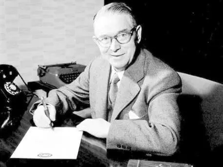
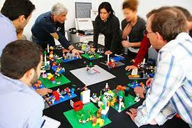
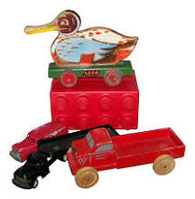

HISTORY
O Grupo Lego foi fundado no dia 10 de agosto de 1932, na Dinamarca, pelo carpinteiro Ole Kirk Kristiansen. Nascida como uma pequena oficina, a empresa era responsável pela fabricação de brinquedos artesanais de madeira.
A origem do lego é dinamarquesa, da cidade de Billund, e teve início na década de 1930, quando a crise econômica global, a Grande Depressão, levou o carpinteiro Ole Kirk Christiansen a se reinventar e mudar o foco do seu trabalho para a produção de brinquedos. Em 1932, com a ajuda do filho Godtfred, de 12 anos, Ole Kirk fundou o Grupo LEGO, que produzia brinquedos de madeira. Dois anos depois, ele inventou o nome que se tornaria mundialmente famoso: LEGO. A palavra vem do dinamarquês “Leg godt” – “jogar bem”. Em 1942, um incêndio destruiu toda a empresa. Mas os funcionários ajudaram a colocar o negócio em funcionamento novamente rapidamente, e logo 40 pessoas estavam trabalhando na Lego. Em meados da década de 1940, o plástico e a fabricação de produtos plásticos tornaram-se cada vez mais populares, e o período pós-guerra trouxe à indústria novas opções em plásticos e tecnologias modernas. Christiansen também modernizou sua empresa e em 1947 comprou a primeira máquina de moldagem por injeção de plástico na Dinamarca e começou a produzir brinquedos desse material. Assim, o Grupo LEGO entra na era do plástico e começa a produzir os primeiros blocos de encaixe, chamados de tijolos Lego.
Godtfred Kirk Christiansen assumiu a gestão da empresa em 1954, e então, desenvolveu algumas regras básicas que o brinquedo deve cumprir: estimular a imaginação, a criatividade e o desenvolvimento; proporcionar diversão ilimitada para crianças de todas as idades; ser seguro e ter qualidade. A partir desses requisitos a ideia era desenvolver um sistema de brincadeiras e aprendizado, mundialmente conhecido LEGO System of Play (Sistema LEGO). A primeira Legoland foi inaugurada em 7 de junho de 1968 em Billund e foi um sucesso imediato. No mesmo ano, a empresa que deu a origem do lego atingiu a marca de mais de um milhão de conjuntos vendidos.
Os anos 1970 e 1980 são considerados o período de expansão, com investimentos em Marketing, Segmentação de Mercado e Logística. Além disso, o desenvolvimento de novos modelos mais sofisticados. Novas linhas de produtos eram constantemente desenvolvidas, linhas educativas e voltadas a bebês, os conjuntos LEGO Family, a Expert Series e Expert Builder, LEGO Space. No passado, tudo se resumia à construção; em seguida, peças móveis, com rodas, motores e engrenagens foram adicionadas e, finalmente, o mundo Lego foi povoado por homens, os famosos bonecos Lego. As últimas linhas de produtos agora também tratam de estratégia, inteligência de jogo e táticas, como a construção de robôs. Em 1979, o filho Godtfred, Kjeld Kirk Kristiansen, que já fazia parte da administração do grupo, tornou-se presidente da LEGO.
LEGO Group é uma empresa familiar dinamarquesa com sede em Billund, na Dinamarca. É mais conhecido pela fabricação de brinquedos da marca Lego, que consistem principalmente em blocos de montar de plástico interligados.
O primeiro LEGO foi criado na Dinamarca, por um carpinteiro chamado Ole Kirk Kristiansen. Pasmem: ele, inicialmente, produziu os brinquedos usando madeira